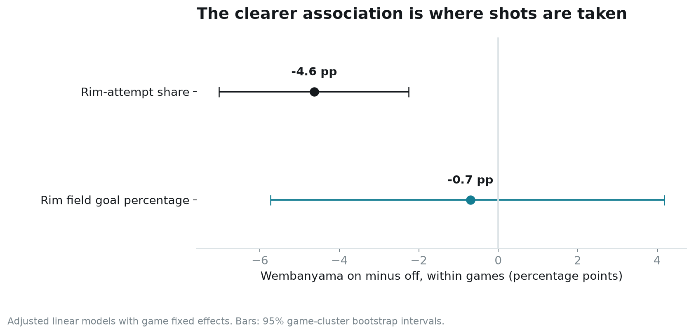

Spurs research notebook
Joseph Smarrelli · September 2026
Three studies of San Antonio basketball: where opponents shoot during Wembanyama’s minutes, what the three-guard combinations can tell us, and how his playoff scoring changed against matched opponents.
| Study | Finding | Main methods |
|---|---|---|
| Where Wembanyama changes the shot map | Adjusted opponent rim-attempt share is 4.6 percentage points lower with him on; the finishing difference is uncertain. | Substitution reconstruction, game fixed effects, game bootstrap, sensitivity checks |
| Three guards, eight groups, one small sample | The Fox–Castle–Harper group has 46 attempts; group forecasts do not beat an early team-rate baseline on later shots. | Mutually exclusive personnel groups, prior smoothing, chronological validation, SQL windows |
| Did Wembanyama need a different playoff shot diet? | Within-zone conversion contributes more to the observed scoring decline than location mix; only nine regular-season comparison games are available. | Opponent weighting, symmetric decomposition, stratified game bootstrap |

Each study includes a finished article, an executed notebook and three figures in PNG and SVG. HTML articles embed their images and open without a server. SQL queries, derived records and audit tables are included. The articles specify the decisions these data can support and the additional information needed for a coaching recommendation.
Reproduce
Python 3.12 was used for the delivered run. From the repository root:
python -m venv .venv
source .venv/bin/activate
python -m pip install -r requirements.txt
python -m src.run_all --fetch
python -m unittest discover -s tests -v
python -m src.notebooks
On Windows, activate .venv\Scripts\activate instead. The fetch step downloads five pinned archives, verifies SHA-256 checksums and extracts CSV inputs. It needs internet access and roughly 700 MB of free working space including the Python environment. Subsequent runs can omit --fetch while raw files remain present. Notebooks start a local Python kernel; they do not call external models or services.
The checked-in derived data allow the tests and python -m src.data sql to run without downloading the raw archive. Recomputing the studies requires the raw inputs. No API key is needed. The notebook builder runs each analysis, regenerates its figures and stores executed outputs.
Files
reports/: three articles in Markdown and self-contained HTML.notebooks/: three executed notebooks with calculations, diagnostics and figures.src/: data retrieval, lineup reconstruction, models, reporting and export.sql/: indexed shot summaries and full-five stint construction with window functions.data/: source manifest and derived event/shot tables. Raw downloads are excluded from version control.results/: estimates, uncertainty, sample exclusions and a possession review queue.figures/: nine PNG figures and their editable SVG versions.tests/: reconstruction, mathematics, data integrity and SQL reconciliation checks.
Read METHODS.md for assumptions and VALIDATION.md for the checks performed.
Scope and sources
The regular-season rotation work uses 2025–26. The playoff study uses 2026 and supplies full-season shooting context from 2023–24 onward. These are completed historical studies, not current roster forecasts.
NBA data are accessed through shufinskiy/nba_data, pinned at commit e829d4678be1e075f99e5d41a1c5f97089be446b. The manifest records source URLs and archive hashes. That archive is maintained outside the NBA; feed conflicts and missing samples are documented in the results. Reconstructed lineups have not been independently reconciled to official box-score minutes.
The code is MIT licensed. Source data retain their original rights and terms; this repository does not relicense NBA data. Full raw archives are not bundled. No team logos or stock imagery are used.